class: center, middle # EE-463 STATIC POWER CONVERSION-I # 3-Phase Controlled Rectifiers ## Ozan Keysan ## [keysan.me](http://keysan.me) ### Office: C-113 <span class="meta">•</span> Tel: 210 7586 --- # Review ## N-Phase Half Wave Rectifier 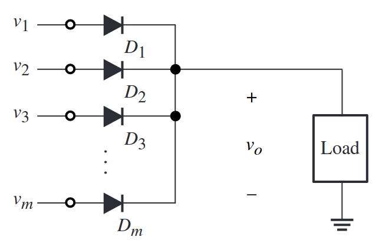 --- # Review ## 3-Phase Half Wave Diode Rectifier 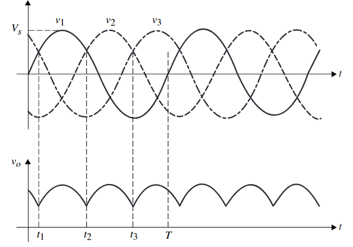 --- # Review ## 3-Phase Half Wave Diode Rectifier Average Voltage? -- ## \\(V\_{dc}= \dfrac{3\sqrt{6}}{2 \pi} V\_{ph,rms}\\) ###or ## \\(V\_{dc}= \dfrac{3\sqrt{2}}{2 \pi} V\_{ll,rms}\\) --- # Half-bridge Tyristor Rectifier <img src="http://img.directindustry.com/images_di/photo-mg/111909-6817621.jpg" alt="Drawing" style="width: 600px;"/> --- # Half-bridge Tyristor Rectifier <img src="http://lh3.ggpht.com/-kPBowC5Q8oE/Tf_VIqQNDLI/AAAAAAAABdE/8o6SQlRpiCc/10_thumb2.jpg?imgmax=800" alt="Drawing" style="width: 600px;"/> --- # Half-bridge Tyristor Rectifier <img src="http://4.bp.blogspot.com/-RadaC6s7kzY/Tg_l-Qy5GxI/AAAAAAAAAj0/1QXrn66OiWc/s1600/3+fasa+setengah+gelombang.JPG" alt="Drawing" style="width: 750px;"/> --- # Half-bridge Tyristor Rectifier ## Average Voltage? -- ## \\(V\_{dc(\alpha)}= \dfrac{3\sqrt{6}}{2 \pi} V\_{ph,rms} cos (\alpha)\\) ###or ## \\(V\_{dc(\alpha)}= \dfrac{3\sqrt{2}}{2 \pi} V\_{ll,rms} cos (\alpha)\\) --- # Half-bridge Tyristor Rectifier ## Disadvantages? -- ## Can you plot the current waveforms? --- # Full-bridge Tyristor Rectifier 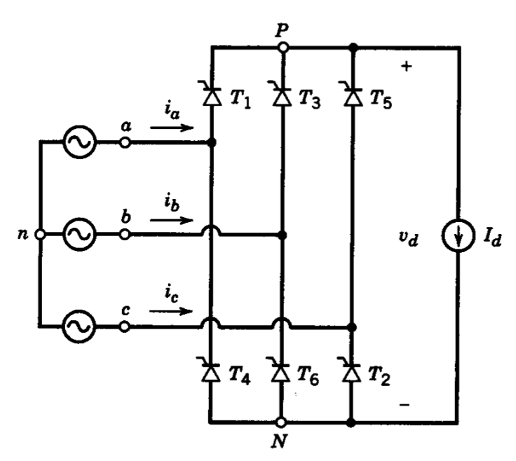 --- # Full-bridge Tyristor Rectifier ## Can you plot the voltage output? -- 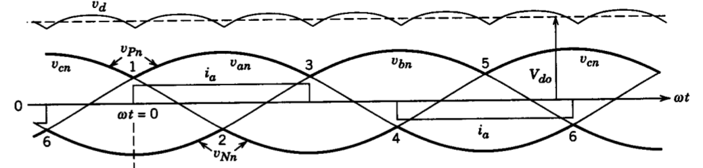 ### Diode Rectifier (or \\(\alpha=0\\)) --- # Full-bridge Tyristor Rectifier ### Diode Rectifier (or \\(\alpha=0\\)) <img src="https://en.0wikipedia.org/index.php?q=aHR0cHM6Ly91cGxvYWQud2lraW1lZGlhLm9yZy93aWtpcGVkaWEvY29tbW9ucy90aHVtYi8yLzJlLzNfcGhhc2VfcmVjdGlmaWNhdGlvbl8yLnN2Zy82NzdweC0zX3BoYXNlX3JlY3RpZmljYXRpb25fMi5zdmcucG5n" alt="Drawing" style="width: 600px;"/> --- # Full-bridge Tyristor Rectifier ### What kind of waveform is it? <img src="https://sub.allaboutcircuits.com/images/03269.png" alt="Drawing" style="width: 800px;"/> --- # Full-bridge Tyristor Rectifier ### Output voltage follows line to line voltages! <img src="http://people.ucalgary.ca/~aknigh/vsd/ssim/images/figs/three_phase_diode_line_line.gif" alt="Drawing" style="width: 800px;"/> --- # Full-bridge Tyristor Rectifier ### Output voltage follows line to line voltages! <img src=" https://en.0wikipedia.org/index.php?q=aHR0cHM6Ly91cGxvYWQud2lraW1lZGlhLm9yZy93aWtpcGVkaWEvY29tbW9ucy85LzkxL0JyaWRnZV9yZWN0aWZpZXJfYXRfYWxwaGElM0QwX3UlM0QwLnBuZw" alt="Drawing" style="width: 600px;"/> --- # Full-bridge Tyristor Rectifier ## Non-zero firing angle -- 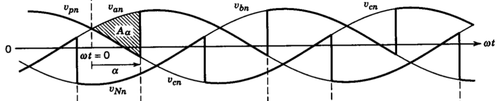 --- # Full-bridge Tyristor Rectifier ## Non-zero firing angle -- 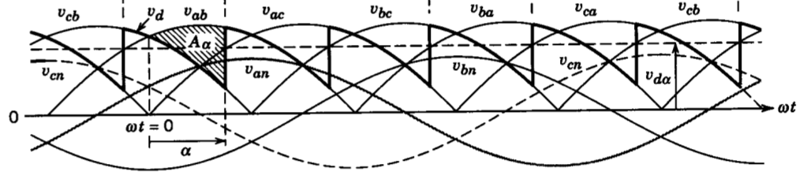 --- # Full-bridge Tyristor Rectifier ## What about the current? -- 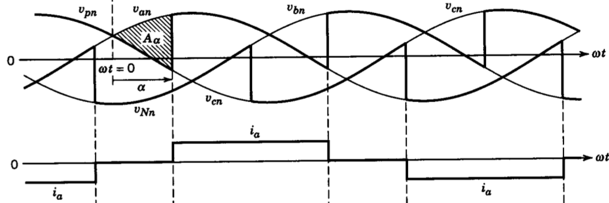 --- # Full-bridge Tyristor Rectifier ## What about the average output voltage? -- ### \\(V\_{d(\alpha)}= \dfrac{3\sqrt{2}}{\pi} V\_{ll,rms} cos (\alpha)\\) ### Twice of the half-bridge case --- # Full-bridge Tyristor Rectifier ## Variation of the output voltage 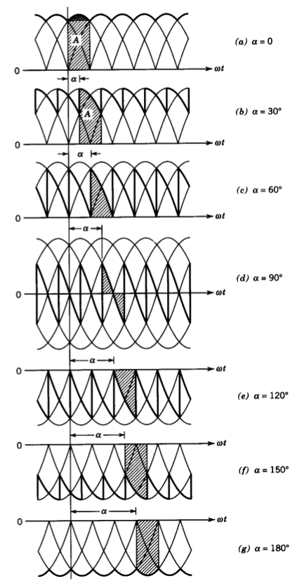 --- # Full-bridge Tyristor Rectifier ## Current Waveform: No triple harmonics -- 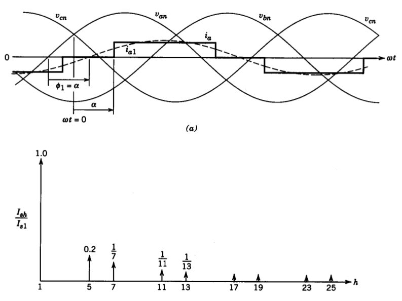 --- # Full-bridge Tyristor Rectifier ## Current Waveform: -- ## Fundamental RMS: \\(I_{s1}=\frac{\sqrt{6}}{\pi}= 0.78 I_d\\) -- ## Total RMS: \\(I_{s}=\sqrt{\frac{2}{3}} I_d = 0.816 I_d\\) -- ## THD= 31.08 % --- # Full-bridge Tyristor Rectifier ## Current Waveform: -- ## DPF=?? --- # Full-bridge Tyristor Rectifier ## Current Waveform: ## DPF= \\(cos (\phi_1)\\) = \\(cos (\alpha)\\) -- ## PF = ? --- # Full-bridge Tyristor Rectifier ## Current Waveform: ## DPF= \\(cos (\phi_1)\\) = \\(cos (\alpha)\\) ## PF = \\(\dfrac{I\_{s1}}{I\_{s}}cos (\alpha) \\) --- # Full-bridge Tyristor Rectifier ## Current Waveform: 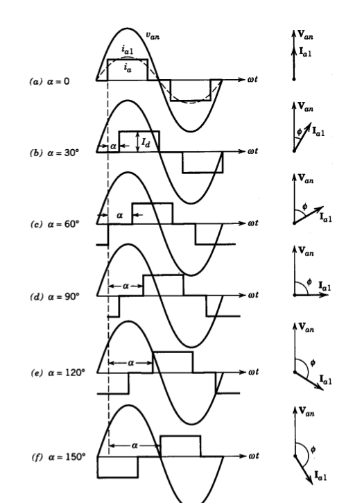 --- # Effect of Ls (Commutation) -- 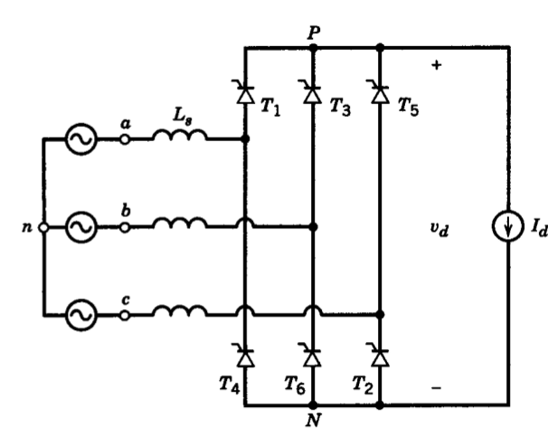 --- # Commutation: \\(\alpha =0 \\), \\(L\_s =0 \\) <img src="https://en.0wikipedia.org/index.php?q=aHR0cHM6Ly91cGxvYWQud2lraW1lZGlhLm9yZy93aWtpcGVkaWEvY29tbW9ucy85LzkxL0JyaWRnZV9yZWN0aWZpZXJfYXRfYWxwaGElM0QwX3UlM0QwLnBuZw" alt="Drawing" style="width: 700px;"/> --- # Commutation: \\(\alpha =0 \\), \\(L\_s > 0 \\) <img src="https://en.0wikipedia.org/index.php?q=aHR0cHM6Ly91cGxvYWQud2lraW1lZGlhLm9yZy93aWtpcGVkaWEvY29tbW9ucy8xLzE4L0JyaWRnZV9yZWN0aWZpZXJfYXRfYWxwaGElM0QwX3UlM0QyMC5wbmc" alt="Drawing" style="width: 700px;"/> --- # Commutation: \\(\alpha =20 \\), \\(L\_s > 0 \\) <img src="https://en.0wikipedia.org/index.php?q=aHR0cHM6Ly91cGxvYWQud2lraW1lZGlhLm9yZy93aWtpcGVkaWEvY29tbW9ucy83LzdjL0JyaWRnZV9yZWN0aWZpZXJfYXRfYWxwaGElM0QyMF91JTNEMjAucG5n" alt="Drawing" style="width: 700px;"/> --- # Commutation: \\(\alpha =40 \\), \\(L\_s > 0 \\) <img src="https://en.0wikipedia.org/index.php?q=aHR0cHM6Ly91cGxvYWQud2lraW1lZGlhLm9yZy93aWtpcGVkaWEvY29tbW9ucy82LzZkL0JyaWRnZV9yZWN0aWZpZXJfYXRfYWxwaGElM0Q0MF91JTNEMjAucG5n" alt="Drawing" style="width: 700px;"/> --- # Effect of Ls (Commutation) 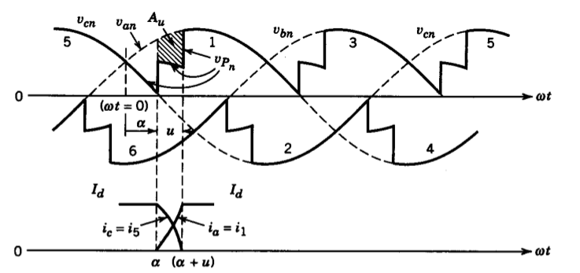 --- # Effect of Ls (Commutation) -- ### \\(A_u = \omega Ls Id\\) (repeats every \\(\pi/3\\)) -- ### \\(V\_{d(\alpha)}= \dfrac{3\sqrt{2}}{\pi} V\_{ll,rms} cos (\alpha) - \dfrac{ 3 \omega Ls Id}{\pi}\\) --- ## You can download this presentation from: [keysan.me/ee463](http://keysan.me/ee463)